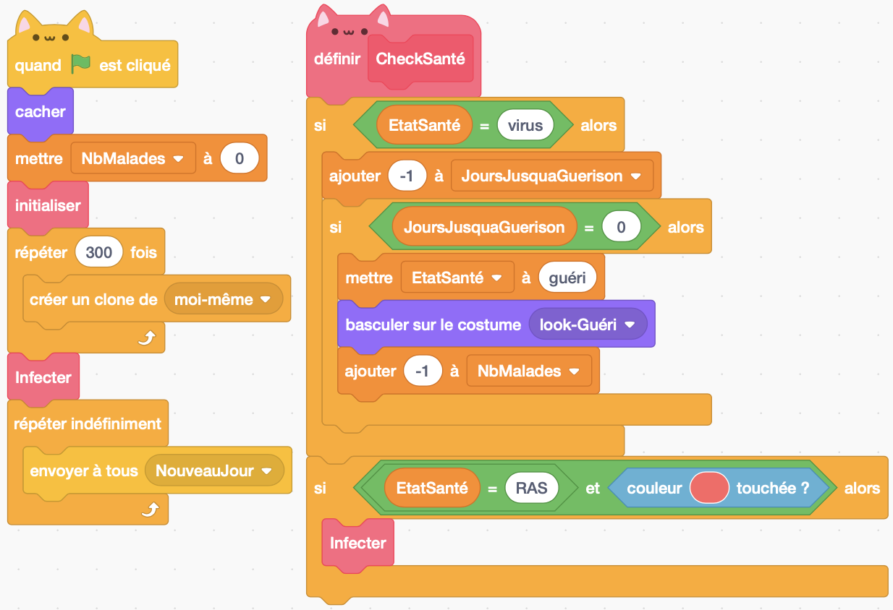

Modéliser l'infection

Figure 3: Une épidémie se propage dans une population.
Vous voilà presque prêts à voir faire apparaître le virus dans votre simulation. C'est ici qu'il sera primordial d'avoir créé les variables que nous avons utilisés jusqu'ici pour qu'elles soient propre au sprite (on parlera ici de variable privée en opposition avec les variables globales qui sont partagées par tous les sprites et que nous utiliserons plus tard). En effet il va falloir transmettre le virus à un individu. Seul l'état de santé de cet individu devra être affecté à ce moment. On voit donc qu'il est nécessaire que chaque individu ait sa propre caractéristique "Etat de santé".
Exercice 5
Modifier votre programme afin que le premier sprite créé soit infecté au lancement du programme. Puis modifier le programme pour que si un individu en bonne santé entre en contact avec un individu infecté, il attrape le virus. Pour cela utiliser le bloc capteur "Couleur ... touchée ?". C'est ici que vous comprendrez pourquoi nous avons préféré "basculer le costume" du sprite. En effet cela vous permet de peindre le costume correspondant au sprite infecté avec une couleur bien précise et d'utiliser cette couleur comme condition dans "Couleur ... touchée ?".
Solution exercice 5
 Ici je ne présente que les groupes de blocs qui ont été modifiés.